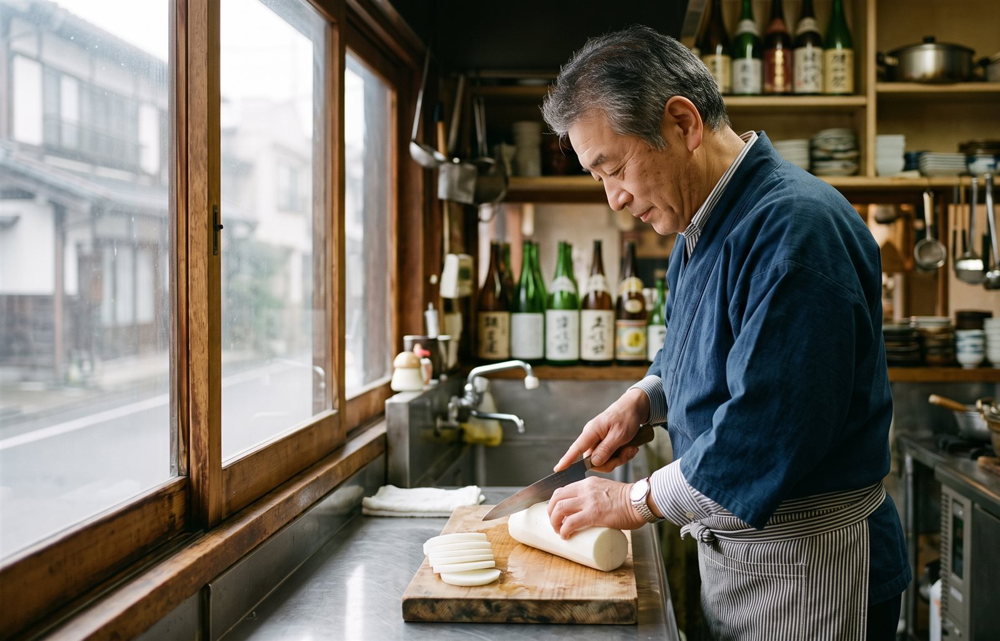
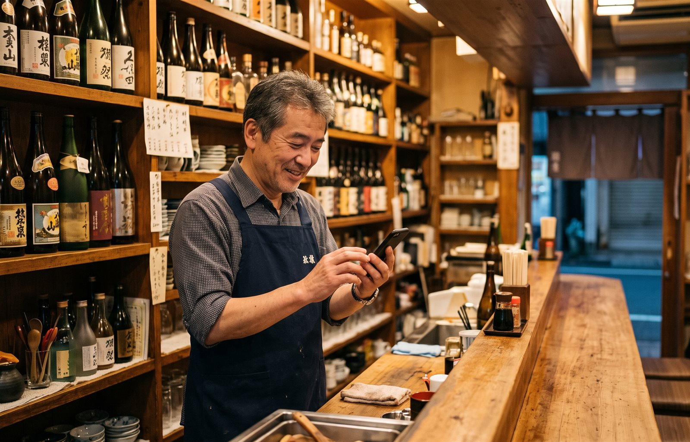

コミヨホウ ／ 記事
平日と週末で、仕込みをどう切り替えるか
「週末は多めに」を品目ごとの数字にする
週末は多めに仕込む。そこまではどの店もやっています。難しいのは、何を、どれだけ、いつから多めにするか。人数の倍率と品目の比率を分けて持つ方法を、計算例と週の段取りつきでまとめました。

金曜と土曜は多めに仕込む。これは、たいていのお店でやっていることだと思います。
ただ、「多めに」の中身を聞かれると、答えに詰まる方が多いのではないでしょうか。どれだけ多めか。全部の品を同じだけ増やすのか。いつから週末の段取りに入るのか。 ここが曖昧だと、土曜に刺身が足りなくなり、同じ夜に〆の雑炊が余る、ということが起きます。
この記事では、平日と週末の切り替えを「人数の倍率」「品目の比率」「切り替える日」の3つに分けて、数字にする方法をまとめます。記録の付け方は仕込み量の決め方の記事に書いたので、まだの方はそちらからどうぞ。
平日と週末は、「量」と「中身」の2つが違う
週末に変わるのは、来るお客さんの人数だけではありません。お客さんの顔ぶれも変わります。
例えば夜の居酒屋なら、平日は仕事帰りの1〜2人客が中心で、週末はグループや家族連れが増える、というお店は珍しくありません。人数の組み合わせが変われば、頼まれる品も変わります。取り分ける大皿が増えたり、逆に食事がわりの一品が減ったりします。
つまり週末の仕込みは、人数を掛けるだけでは合わないことがある。量と中身を、別々に数字にしておく必要があります。
手順1｜曜日ごとの「週末倍率」を出す
まずは量です。曜日ごとの平均客数を、平日の平均で割ります。月曜定休で、夜だけ営業している居酒屋を例にします。
| 曜日 | 平均客数 | 平日の何倍か |
|---|---|---|
| 火曜 | 19人 | — |
| 水曜 | 24人 | — |
| 木曜 | 26人 | — |
| 平日（火〜木）の平均 | 23人 | 1.0 |
| 金曜 | 39人 | 1.7 |
| 土曜 | 44人 | 1.9 |
| 日曜 | 30人 | 1.3 |
金曜 39 ÷ 23 ＝ 1.7 ／ 土曜 44 ÷ 23 ＝ 1.9 ／ 日曜 30 ÷ 23 ＝ 1.3
平日の平均を1としたときの、曜日ごとの倍率（例）
何曜日からを週末として扱うかも、店によって違います。昼の店では金曜が平日とあまり変わらないこともあるし、祝日の前の日が金曜のような動きになる店もあります。決めつけずに、自分の記録で確かめてください。
手順2｜品目ごとに、週末用の出数比率を持つ
次に中身です。仕込み量の記事では、看板メニューが客数の何割に出ているか（出数比率）を使いました。これを平日用と週末用に分けて持ちます。
出し方は同じです。伝票を平日2日ぶんと土曜2日ぶん取り出して、日持ちしない品の注文数を数え、その日の客数で割ります。
水曜2日ぶん 客数 48人 ／ 刺身の盛り合わせ 7皿 → 7 ÷ 48 ＝ 0.15
同じ店の同じ品でも、比率が倍違うことがあります。この比率で、水曜と土曜の仕込みを並べてみます。
| 品目 | 平日の比率 | 水曜 24人 | 土曜の比率 | 土曜 44人 |
|---|---|---|---|---|
| 名物の煮込み | 0.6 | 約14食 | 0.6 | 約26食 |
| 刺身の盛り合わせ | 0.15 | 約4皿 | 0.3 | 約13皿 |
| 〆の雑炊 | 0.5 | 約12食 | 0.3 | 約13食 |
客数は1.8倍。でも、品目ごとの伸び方はばらばら
もし全部を客数と同じ1.8倍にしていたら、どうなるか。刺身は4皿×1.8で約7皿しか用意できず、6皿足りません。雑炊は12食×1.8で約22食を仕込み、9食ぶん余ります。「週末は多めに」だけで仕込むと、足りない品と余る品が同じ夜に出るのは、このためです。
週末に比率が動きやすい品（例）
- 取り分ける大皿……刺身や揚げ物の盛り合わせなど。グループが増えると伸びやすい
- 食事がわりの品……〆のご飯ものなど。平日の一人客によく出る店では、週末に比率が下がることがある
- 動きにくい品……名物など、多くの人が頼む品は、ほぼ客数どおりに増える
ただし、どの品がどう動くかは店によってまったく違います。上の例と逆の動きをする店もあるはずです。全品やる必要はありません。日持ちしない上位3品だけ、平日と週末の比率を並べてみてください。
手順3｜切り替える日を、週の段取りに組み込む
量と中身が決まったら、最後はいつ切り替えるかです。土曜の朝に「今日は週末だ」と気づいても、仕入れはもう間に合いません。
切り替えは、週末の前から始まっています。日持ちするかどうかで、仕込みを始める日を分けるのが基本です。
月曜定休の店の、1週間の段取り（例）
段取りの分け方
- 日持ちするもの（煮込み、タレ、出汁など）……木曜〜金曜に、週末ぶんをまとめて
- 日持ちしないもの（刺身、生野菜、薬味など）……その日に、その日のぶんだけ
- 週末の発注……取引先の配送日から逆算して、間に合う日までに
見落としがちなのが、日曜の扱いです。土曜の勢いのまま日曜も仕込むと、この例では日曜の客数は土曜の7割ほどしかないので、余ります。しかも月曜が定休なら、日曜の残りは火曜まで2日持ち越すことになります。
ですから、日曜は新しく仕込む日ではなく、土曜に仕込んだものを使い切る日と決めてしまうのも一つの手です。余ったときの行き先を先に決めておく考え方は、食材ロスの記事にまとめました。
週末に外すと、なぜ痛いのか
週末は人数が多いぶん、1回の読み違いで動く皿の数も多くなります。では、足りないのと余るのでは、どちらが痛いのか。刺身の盛り合わせで計算してみます。
3皿足りなかった → 950円 × 3 ＝ 2,850円の粗利を逃す
3皿余って捨てた → 550円 × 3 ＝ 1,650円の損
この例では、足りない方が痛いことになります。ただ、品切れでもお客さんが別の品を頼んでくれれば、逃す額はもっと小さくなります。一方で、捨てた損は確実に出ます。ですから、どちらかに決めつけるより、品目ごとに「外し方」を決めておくのが現実的です。
- 日持ちして、翌日に回せる品……週末は少し多めに寄せる
- 日持ちせず、原価の高い品……比率どおりに仕込み、足りなければ途中で足せる形にしておく（柵のまま置いて、出たぶんだけ切る、など）
よくある3つのつまずき
1. 金・土・日を、同じ量で仕込む
この例では、土曜と日曜で14人違います。「週末」ではなく、曜日ごとに倍率を持つのが基本です。
2. 週末の比率を、1日ぶんの伝票で決める
団体が1組入っただけで、大皿の比率は大きく跳ねます。少なくとも2〜3回ぶんの伝票で平均してください。
3. 連休や行事の週末を、普通の週末と混ぜる
お祭りや連休に当たった週末は、倍率が大きく外れます。記録に印をつけて、平均の計算からは外しておきます。
それでも、手が回らないとき

倍率、比率、切り替える日。手順は3つですが、週末前の立て込む時期に毎週これを回すのは、正直なところ骨が折れます。
曜日や天気、地域の行事による増減の計算を任せたい場合は、そういう仕組みを使う手もあります。私たちが作っているコミヨホウは、明日の来店みこみと仕込みの目安を、毎夕LINEに1通お届けしています。お店でやることは1日ひとタップです。
ただ、伝票を数えて、平日と週末の比率を3品ぶん並べるだけでも、週末の読み違いは減らせます。 まずは次の土曜の伝票を、捨てずに取っておくところから始めてみてください。
コミヨホウについて
客足を動かす8つの要因をAIが毎日自動で集めて計算し、「明日の来店みこみ・売上みこみ・仕込みの目安」をLINEに1通お届けするサービスです。POSレジとの連携は不要。最初の30日は無料（カード登録なし）で、続ける場合だけ月額5,500円（税込）。解約はいつでも違約金なしです。
コミヨホウの詳細を見る →